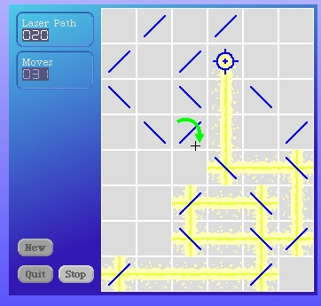
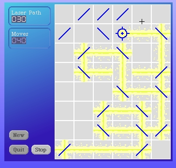

One consideration we must make is that it is possible for both sides of a mirror cell to be active. See the example below.
The mirror cell in the 5th column, 7th row is active on both sides. For mirror cells in this state, the drawing is already correct.
As another thought, this means we probably need to go back and revisit the blank cell laser drawing code too since it's possible for a laser beam to cross its own path on a blank grid cell too.
We'll deal with that when we get the mirror cell finished.